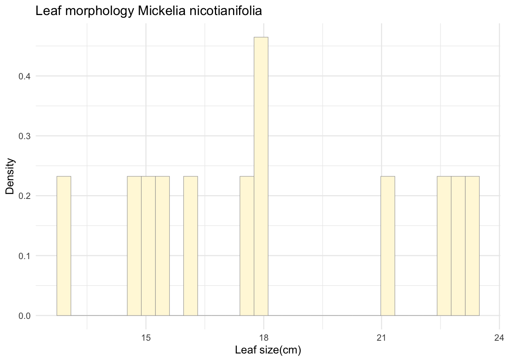
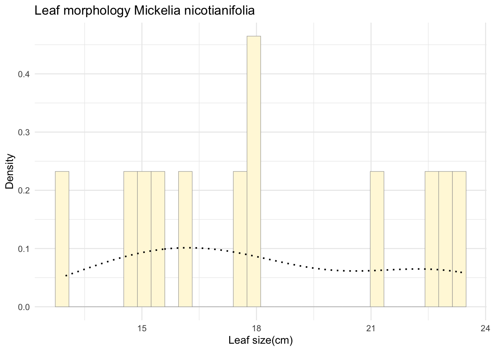
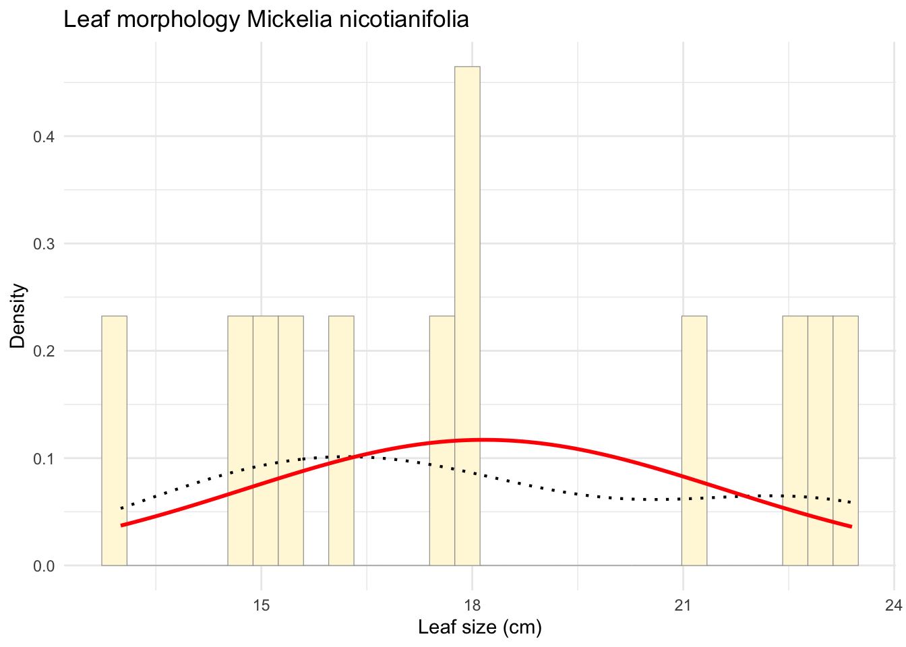
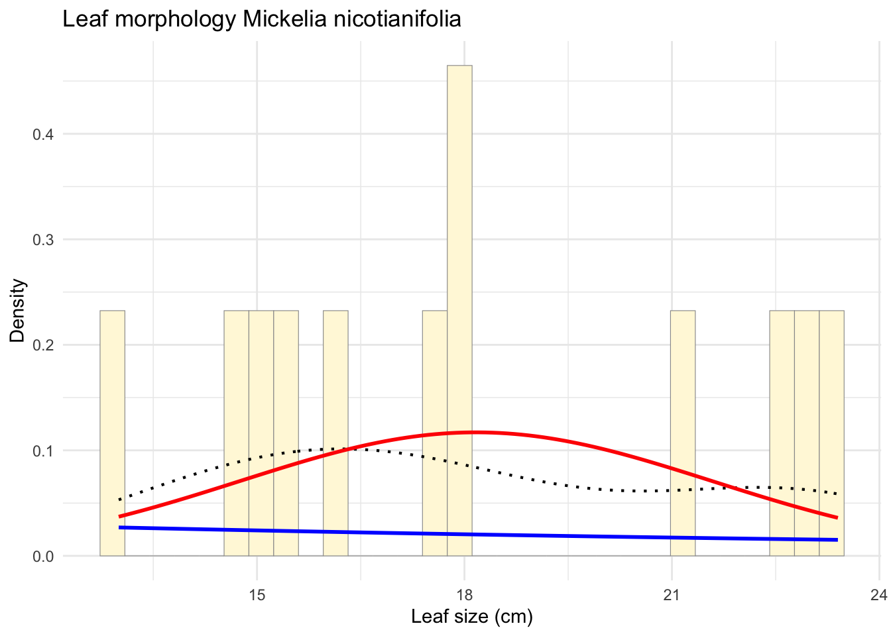
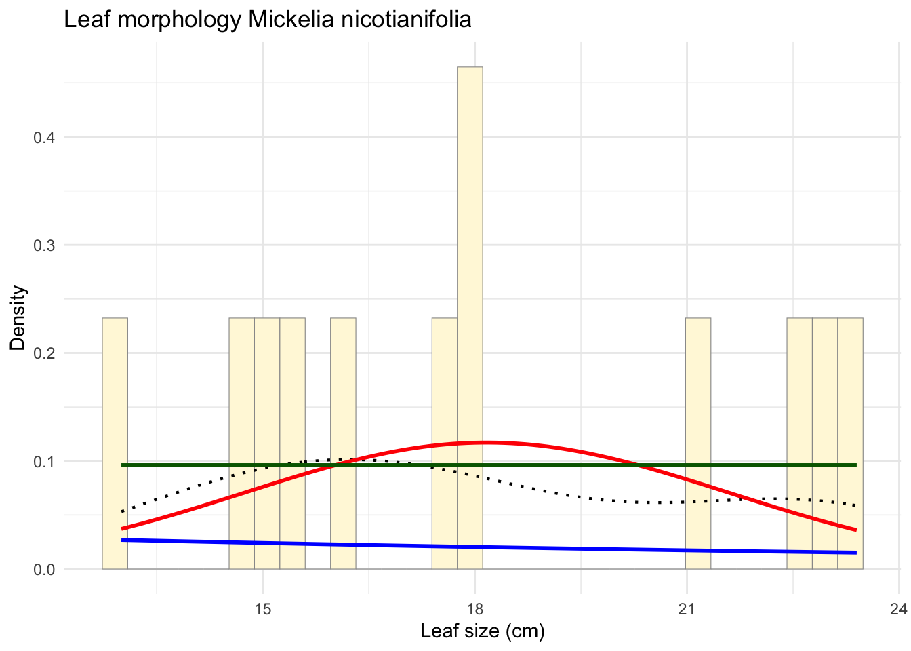
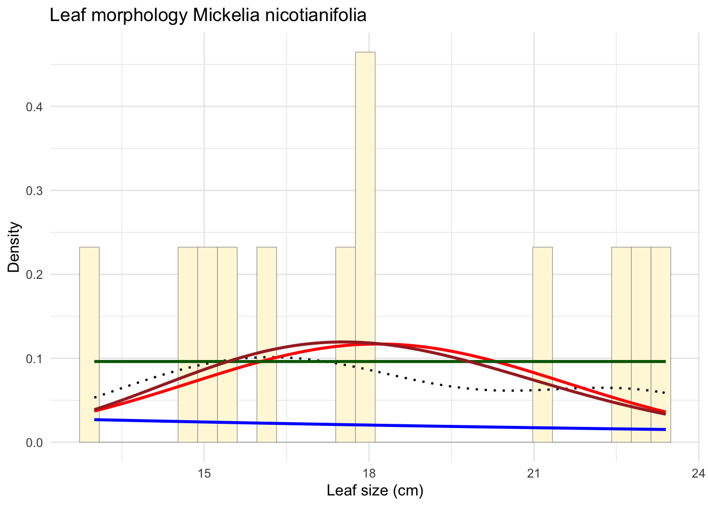
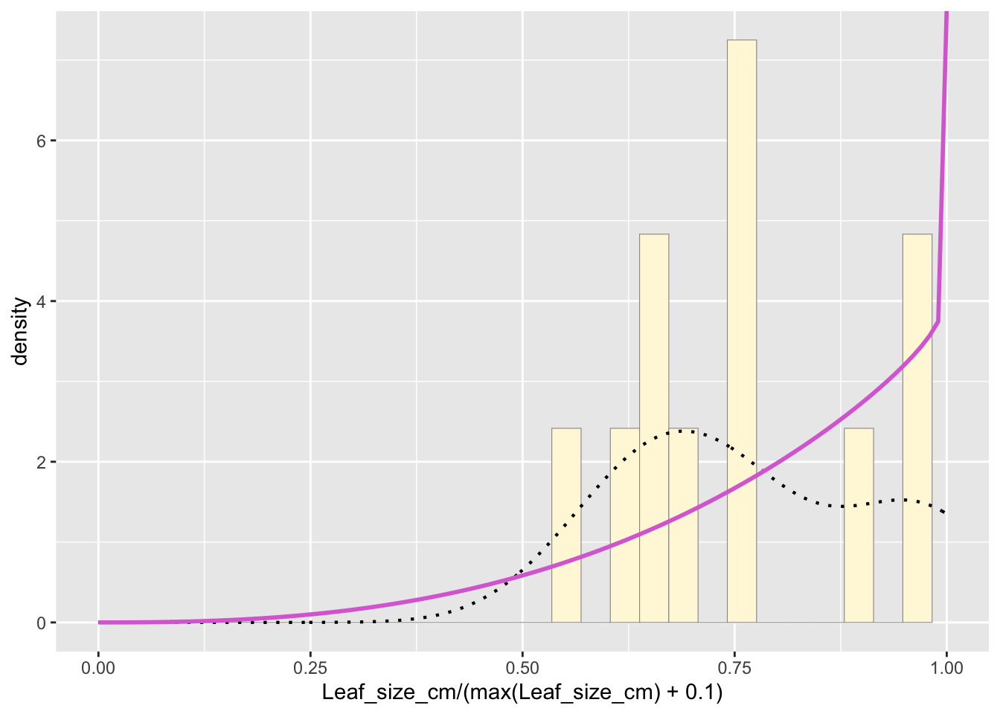

z <- read.table("Mickelia_nicot_datos.csv", header=TRUE, sep=",")
str(z) ## 'data.frame': 12 obs. of 9 variables:
## $ Habit : chr "terrestrial_1" "Terrestrial_2" "Terrestrial_3" "Terrestrial_4" ...
## $ number_leaves_sampled : int 2 2 2 2 2 2 2 2 2 2 ...
## $ Pinnae_numb : int 1 3 3 3 5 5 5 3 5 5 ...
## $ Leaf_size_cm : num 13 18 21 18 23 23.4 22.7 17.5 15 16.2 ...
## $ Petiole_size : num 4.5 6 8.5 5.8 11 11 11 8 7.8 8 ...
## $ Pinnae_size_cm : num 5 5.5 6 6 8 8 7.6 8 5 6 ...
## $ laminae_widht_cm : num 10 10 9.7 9 18 17 17.7 17.5 8 8 ...
## $ pinnae_withd_cm : num 3.3 4 3.5 4 6 5.5 4.8 6 3 2.5 ...
## $ Petiole_scales_size_cm: num 0.4 0.35 0.4 0.3 0.25 0.28 0.33 0.35 0.2 0.18 ...summary(z) ## Habit number_leaves_sampled Pinnae_numb Leaf_size_cm
## Length:12 Min. :2 Min. :1.000 Min. :13.00
## Class :character 1st Qu.:2 1st Qu.:3.000 1st Qu.:15.30
## Mode :character Median :2 Median :3.000 Median :17.75
## Mean :2 Mean :3.667 Mean :18.17
## 3rd Qu.:2 3rd Qu.:5.000 3rd Qu.:21.43
## Max. :2 Max. :5.000 Max. :23.40
## Petiole_size Pinnae_size_cm laminae_widht_cm pinnae_withd_cm
## Min. : 4.500 Min. :5.000 Min. : 8.00 Min. :2.500
## 1st Qu.: 6.750 1st Qu.:5.000 1st Qu.: 8.75 1st Qu.:3.150
## Median : 7.900 Median :6.000 Median : 9.85 Median :3.750
## Mean : 7.983 Mean :6.258 Mean :11.82 Mean :4.067
## 3rd Qu.: 9.125 3rd Qu.:7.700 3rd Qu.:17.12 3rd Qu.:4.975
## Max. :11.000 Max. :8.000 Max. :18.00 Max. :6.000
## Petiole_scales_size_cm
## Min. :0.1800
## 1st Qu.:0.2075
## Median :0.2900
## Mean :0.2867
## 3rd Qu.:0.3500
## Max. :0.4000library(ggplot2)
p1 <- ggplot(data=z, aes(x=Leaf_size_cm, y=..density..)) +
geom_histogram(color="grey60", fill="cornsilk", size=0.2) +
labs(title="Leaf morphology Mickelia nicotianifolia",
x="Leaf size(cm)",
y="Density") +
theme_minimal() ## Warning: Using `size` aesthetic for lines was deprecated in ggplot2 3.4.0.
## ℹ Please use `linewidth` instead.
## This warning is displayed once every 8 hours.
## Call `lifecycle::last_lifecycle_warnings()` to see where this warning was
## generated.print(p1) ## Warning: The dot-dot notation (`..density..`) was deprecated in ggplot2 3.4.0.
## ℹ Please use `after_stat(density)` instead.
## This warning is displayed once every 8 hours.
## Call `lifecycle::last_lifecycle_warnings()` to see where this warning was
## generated.## `stat_bin()` using `bins = 30`. Pick better value with `binwidth`.
p1 <- p1 + geom_density(linetype="dotted",size=0.75)
print(p1)## `stat_bin()` using `bins = 30`. Pick better value with `binwidth`.
library(MASS)##
## Attaching package: 'MASS'## The following object is masked from 'package:dplyr':
##
## selectnormPars <- fitdistr(z$Leaf_size_cm, "normal")
print(normPars)## mean sd
## 18.1666667 3.4084046
## ( 0.9839217) ( 0.6957377)str(normPars)## List of 5
## $ estimate: Named num [1:2] 18.17 3.41
## ..- attr(*, "names")= chr [1:2] "mean" "sd"
## $ sd : Named num [1:2] 0.984 0.696
## ..- attr(*, "names")= chr [1:2] "mean" "sd"
## $ vcov : num [1:2, 1:2] 0.968 0 0 0.484
## ..- attr(*, "dimnames")=List of 2
## .. ..$ : chr [1:2] "mean" "sd"
## .. ..$ : chr [1:2] "mean" "sd"
## $ n : int 12
## $ loglik : num -31.7
## - attr(*, "class")= chr "fitdistr"mean_estimate <- normPars$estimate["mean"]
print(mean_estimate) ## mean
## 18.16667meanML <- normPars$estimate["mean"]
sdML <- normPars$estimate["sd"]
p1 <- ggplot(data=z, aes(x=Leaf_size_cm)) +
geom_histogram(aes(y = ..density..), color="grey60", fill="cornsilk",
size=0.2, bins=30) + # Usar density aquí
labs(title="Leaf morphology Mickelia nicotianifolia",
x="Leaf size (cm)",
y="Density") +
theme_minimal() +
geom_density(aes(y = ..density..), linetype="dotted", size=0.75) +
stat_function(fun = dnorm,
args = list(mean = meanML, sd = sdML),
colour = "red",
size = 1)
print(p1)
expoPars <- fitdistr(z$Leaf_size_cm, "exponential")
rateML <- expoPars$estimate["rate"]
xval <- seq(0, max(z$Leaf_size_cm, na.rm = TRUE), length.out = length(z$Leaf_size_cm))
stat2 <- stat_function(fun = dexp,
args = list(rate = rateML),
colour = "blue",
size = 1)
p_combined <- p1 + stat2
print(p_combined)
min_val <- min(z$Leaf_size_cm)
max_val <- max(z$Leaf_size_cm)
stat3 <- stat_function(fun = dunif,
args = list(min = min_val, max = max_val),
colour = "darkgreen",
size = 1)
p_final <- p_combined + stat3
print(p_final)
gammaPars <- fitdistr(z$Leaf_size_cm, "gamma")
shapeML <- gammaPars$estimate["shape"]
rateML <- gammaPars$estimate["rate"]
stat4 <- stat_function(fun = dgamma,
args = list(shape = shapeML, rate = rateML),
colour = "brown",
size = 1)
p_final <- p_final + stat4
print(p_final)
pSpecial <- ggplot(data=z,
aes(x=Leaf_size_cm/(max(Leaf_size_cm) + 0.1))) +
geom_histogram(aes(y = ..density..), color="grey60", fill="cornsilk", size=0.2, bins=30) +
xlim(c(0,1)) +
geom_density(size=0.75, linetype="dotted")
betaPars <- fitdistr(x=z$Leaf_size_cm/max(z$Leaf_size_cm + 0.1), start=list(shape1=1, shape2=2), "beta") ## Warning in densfun(x, parm[1], parm[2], ...): NaNs produced
## Warning in densfun(x, parm[1], parm[2], ...): NaNs produced
## Warning in densfun(x, parm[1], parm[2], ...): NaNs produced
## Warning in densfun(x, parm[1], parm[2], ...): NaNs producedshape1ML <- betaPars$estimate["shape1"]
shape2ML <- betaPars$estimate["shape2"]
statSpecial <- stat_function(fun = dbeta,
args = list(shape1=shape1ML, shape2=shape2ML),
colour = "orchid",
size = 1)
pSpecial + statSpecial## Warning: Removed 2 rows containing missing values or values outside the scale range
## (`geom_bar()`).